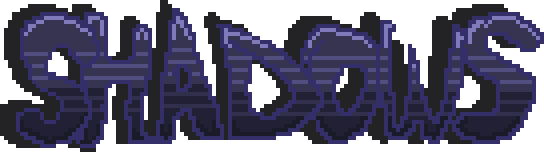
Cómo explicar cada estructura con el juego en pantalla y el código al lado
Shadows es un juego 2D de puzzles de luz y sombra. El jugador es una sombra: la luz lo mata, así que coloca bloques de sombra para taparla y llegar a la salida. A lo largo de la materia le fuimos sumando las diez estructuras de la consigna, cada una metida en algo que el juego ya hacía.
La guía está pensada para que cualquiera del grupo pueda defender cualquier TP, aunque no lo haya programado. Cada tema tiene la misma forma: qué es la estructura dicho en simple, con un dibujo; dónde se ve jugando, con una captura; el código real en el que está; por qué elegimos esa implementación; y un guion corto para decirlo en voz alta.
estructuras-de-datos del repo Lyed01/Shadows y abrir el proyecto con Unity 6000.3.17f1.MainMenu, dar Play y elegir "Jugar". Aparece el índice con los tres niveles y, abajo, el ranking de tiempos.Los controles son los del juego: WASD para moverse, Espacio para entrar al modo habilidad, 1 a 4 o la rueda para elegir habilidad, clic para usarla y Z para deshacer el último bloque.
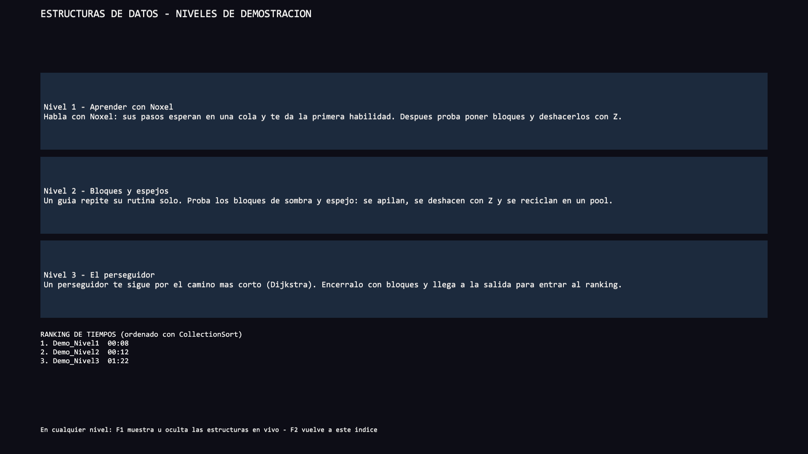
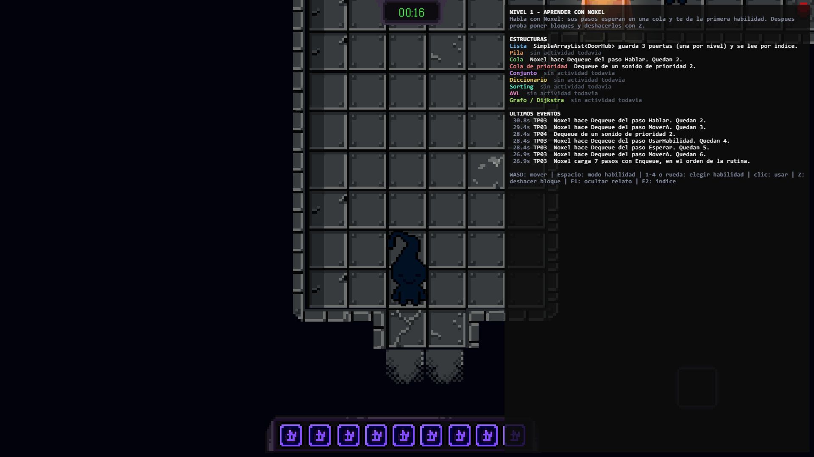
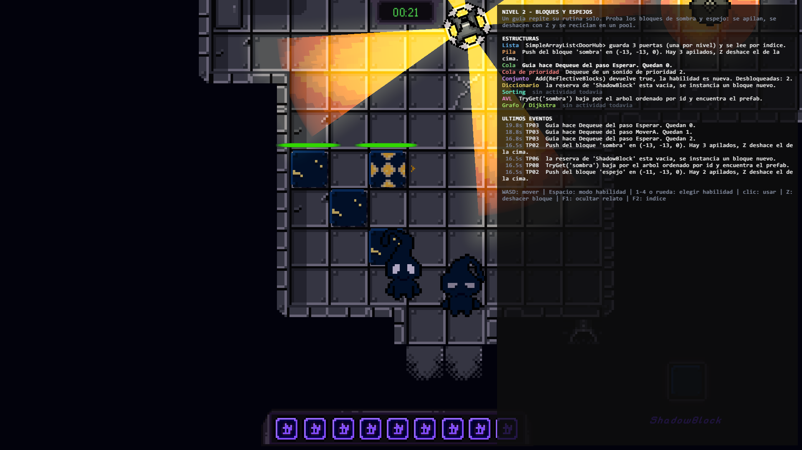
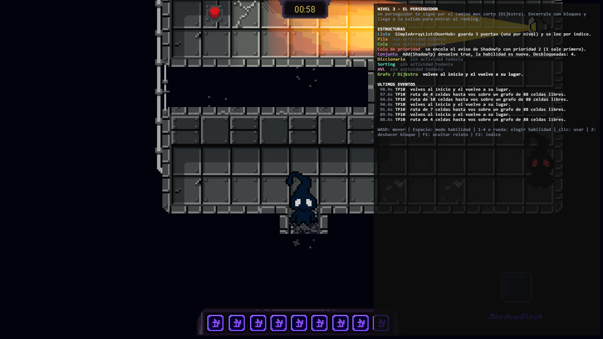
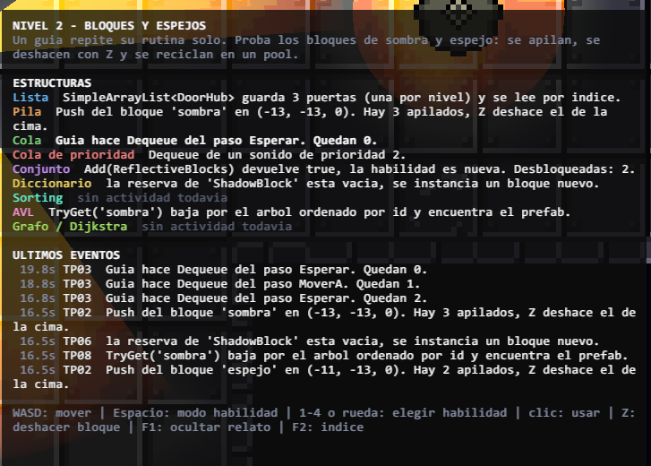
Arriba, el título y el objetivo del nivel.
En Estructuras hay una fila fija por cada TP, siempre en el mismo orden y con su color. Cada fila muestra lo último que hizo esa estructura y se pone en negrita durante dos segundos cuando se acaba de usar.
En Últimos eventos están los siete más recientes, el más nuevo arriba, con el segundo del juego y el número de TP.
Los mensajes salen del código real: en cada lugar donde el juego usa una estructura hay una línea Narrador.Decir(...). Por eso aparecen en las imágenes de código de esta guía.
Assets/Scenes/Estructuras/PruebaTodo corre las pruebas automáticas de los TP01 a TP09 y muestra una tabla OK/FALLA (9 de 9 en verde). Sirve de respaldo si el profesor quiere ver que cada estructura cumple con todas sus operaciones, más allá de lo que usa el juego.Casi todas las estructuras tienen dos versiones, y la consigna pide justificar cuál usamos.
SimpleArray…). Ir al casillero 3 es inmediato. Meter o sacar algo en el medio obliga a correr todo lo que está después.SimpleLinked…). Agregar o sacar en una punta es enganchar o soltar un vagón, sin mover nada. Para llegar al vagón 3 hay que recorrer los anteriores, y cada nodo gasta un poco más de memoria.| Notación | Se lee | Qué significa en criollo |
|---|---|---|
| O(1) | constante | Tarda lo mismo con 3 elementos que con 3 millones. |
| O(log n) | logarítmico | Cada paso descarta la mitad, como buscar una palabra en el diccionario de papel. |
| O(n) | lineal | Puede tener que mirar todos los elementos uno por uno. |
Cada TP tiene una interfaz (ISimpleList, ISimpleStack, etc.) que dice qué operaciones existen, y dos clases que la cumplen. El juego guarda la variable con el tipo de la interfaz y elige la clase concreta en una sola línea, el new. Cambiar de estática a dinámica es cambiar esa línea y nada más. Todo el código propio está en Assets/Scripts/Data Structures/, y en las mecánicas que cubren los TP no se usan List, Stack, Queue, HashSet ni Dictionary de C#.
Una lista es una fila de elementos con posición: el primero, el segundo, el tercero. Se puede leer o cambiar cualquier posición, agregar al final, insertar en el medio y quitar. Es la estructura más general de todas.
Cada vez que ponés un bloque, el juego primero se fija si tiene uno guardado de antes para reciclarlo (un pool). Al deshacerlo o cuando la luz lo destruye, vuelve a esa reserva. También son una lista las puertas de los niveles, que el ranking recorre.
Fila Lista: "el pool saca el último bloque de la reserva (RemoveAt, O(1))" o "el bloque vuelve a la reserva del pool (Add)". Al entrar al nivel: cuántas puertas hay en la lista.
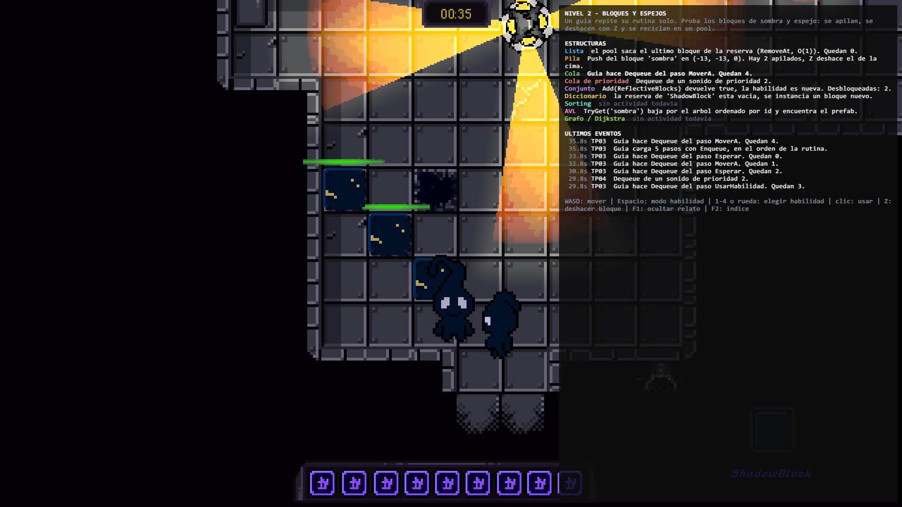
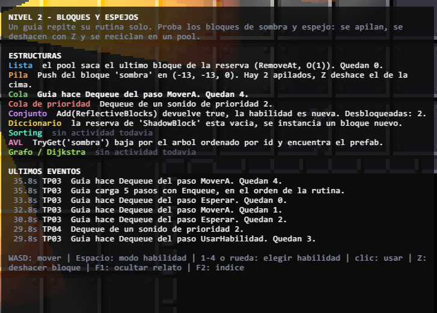
Clases: ISimpleList, SimpleArrayList, SimpleLinkedList. El juego usa la estática en dos lugares: DoorHub.Registradas (las puertas) y las reservas de PoolDeBloques.
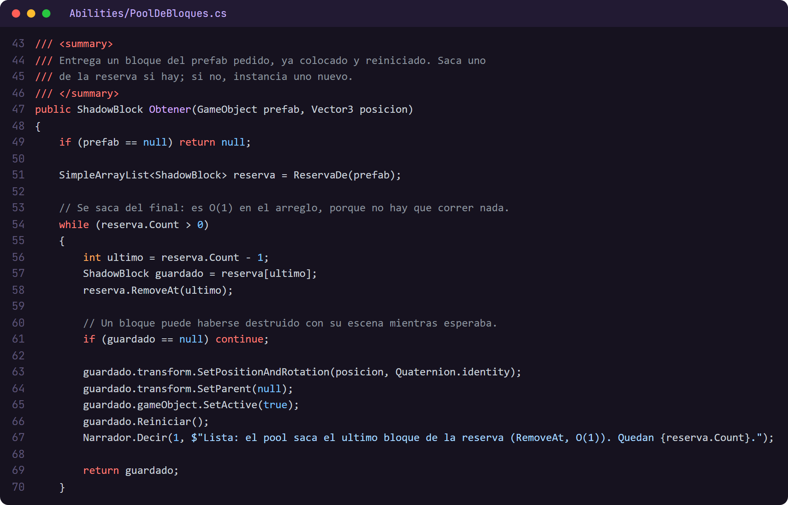
Las puertas se cargan una vez y después se leen por índice en cada frame para encontrar la más cercana al jugador: acceder por posición es O(1) en el arreglo y O(n) en la enlazada. En el pool siempre se saca y se agrega por el final, que en el arreglo también es O(1). La dinámica no aportaría nada y gastaría un nodo por elemento.
Si preguntan por la enlazada: nuestra SimpleLinkedList es simplemente enlazada (cada nodo apunta solo al siguiente). En clase se vio la doblemente enlazada, que puede entrar por la punta más cercana. Está implementada y probada en PruebaTodo, pero el juego no la necesita.
Una pila es como una pila de platos: el último que ponés arriba es el primero que sacás. Se llama LIFO (last in, first out). Solo se trabaja con la cima: Push apila, Pop desapila y Peek mira la cima sin sacarla.
Cada bloque que ponés se apila. Al apretar Z se deshace el último que pusiste, después el anterior, y así. Es un "deshacer" clásico.
Fila Pila: "Push del bloque 'sombra' en (x, y). Hay 3 apilados" al poner, y "Pop, se deshace el bloque. Quedan 2" al apretar Z.
Clases: ISimpleStack, SimpleArrayStack, SimpleLinkedStack. La pila vive en GridManager, que administra la grilla de celdas. Al colocar un bloque se hace historialDeBloques.Push(sb); Z llama a DeshacerUltimoBloque:
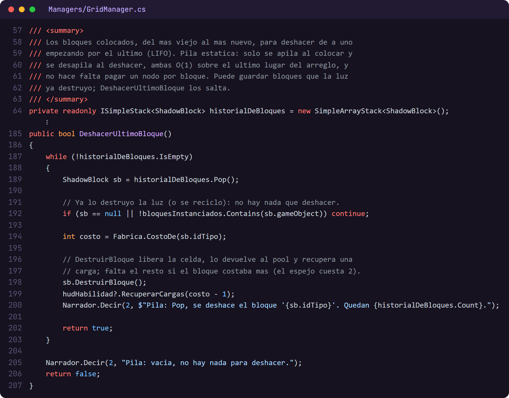
Un detalle de gameplay: la luz puede destruir un bloque que todavía está en la pila. Al desapilar, ese bloque se salta y se sigue con el siguiente, así Z siempre deshace algo que existe.
Apilar y desapilar ocurren en el último lugar del arreglo, que es O(1). No hace falta pagar un nodo por cada bloque. La enlazada también sería O(1), así que la diferencia la decide la memoria.
Una cola es la fila del supermercado: el primero que llega es el primero que atienden. Se llama FIFO (first in, first out). Enqueue agrega al final y Dequeue saca del principio.
Noxel (nivel 1) y el guía (nivel 2) hacen una rutina de pasos: moverse a un punto, usar una habilidad, esperar, hablar. Los pasos se cargan en una cola y se ejecutan en el mismo orden en que se cargaron.
Fila Cola: "Noxel carga 7 pasos con Enqueue" y después "Noxel hace Dequeue del paso MoverA. Quedan 5", que va bajando a medida que avanza.
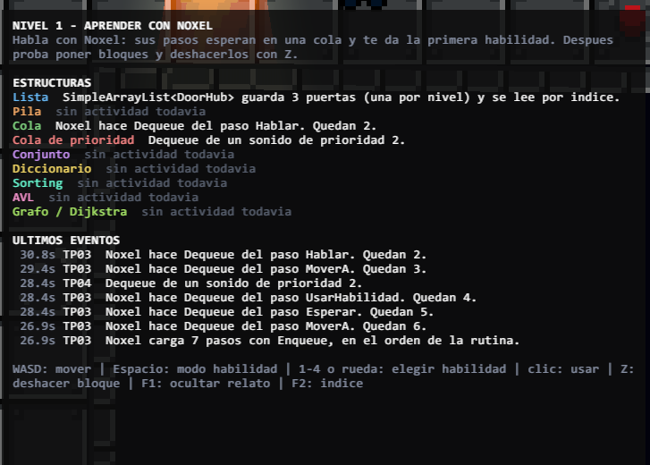
Clases: ISimpleQueue, SimpleArrayQueue, SimpleLinkedQueue. La usa NPCDemostrador, el componente de Noxel y del guía.
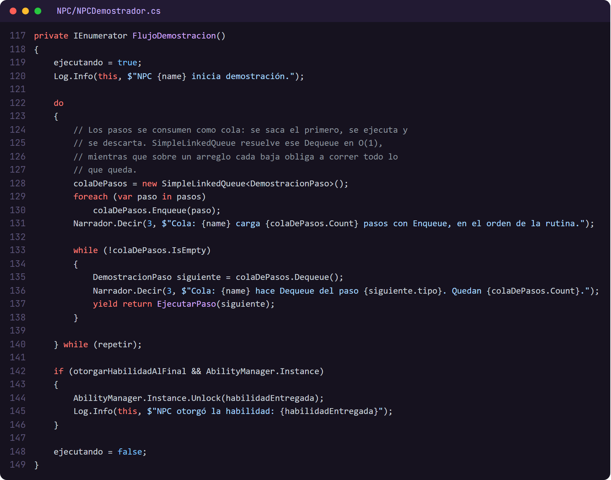
La operación que más se repite es sacar el primero. En la enlazada es O(1): el segundo nodo pasa a ser el primero y listo. Sobre un arreglo simple, sacar el primero obliga a correr todos los demás un lugar.
Es como la guardia de un hospital: no se atiende por orden de llegada sino por gravedad. Cada elemento entra con un número de prioridad y sale primero el más urgente. En nuestro proyecto el número más chico es el más urgente, como los puestos de una carrera: el 1 va antes que el 2. Si empatan, sale primero el que llegó antes.
Sonidos: en un mismo frame pueden pedirse muchos. Suenan como máximo tres y ganan los importantes (muerte y habilidades 1; bloques, teletransporte y diálogo 2; pasos 3). Avisos: al empezar el nivel 2 hay tres carteles de habilidad para mostrar y salen de a uno, en orden de prioridad, en vez de pisarse.
Fila Cola de prioridad: "se encola el aviso de ReflectiveBlocks con prioridad 2 (1 sale primero)", "Dequeue de un sonido de prioridad 1" y, si hubo demasiados, cuántos sonaron y cuántos se descartaron.
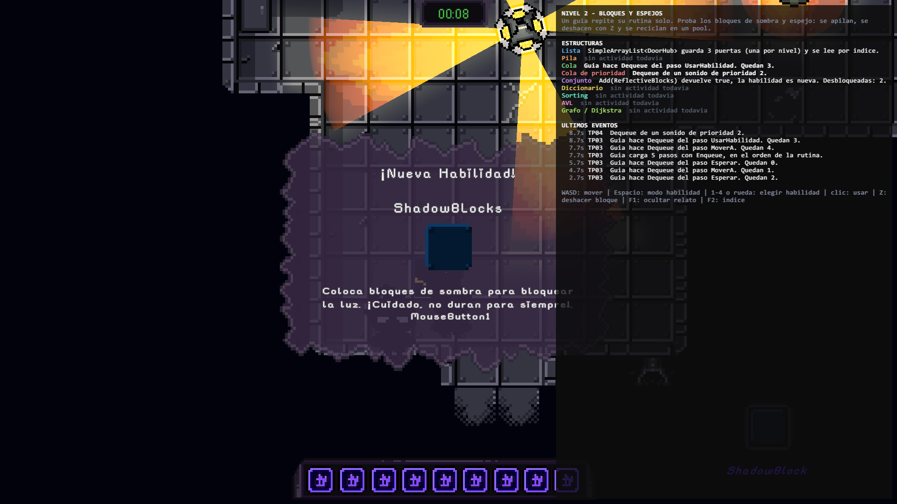
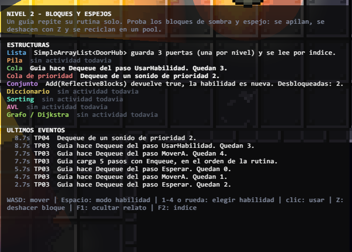
Clases: ISimplePriorityQueue, SimpleArrayPriorityQueue (arreglo sin ordenar) y SimpleLinkedPriorityQueue (nodos que se mantienen ordenados). Se usan las dos, cada una donde le conviene.
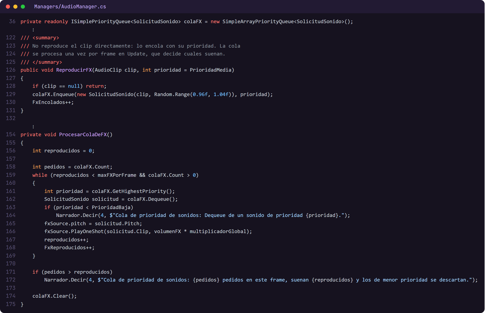
Un conjunto es como un álbum de figuritas: cada figurita está o no está, nunca repetida, y no importa en qué orden la pegaste. La operación clave es preguntar si algo está (Contains). Add devuelve si lo agregó o si ya estaba.
Las habilidades desbloqueadas. Noxel te da la primera en el nivel 1 y el nivel 2 arranca con dos (sombra y espejo). Si el juego intenta desbloquear de nuevo una que ya tenés, no se duplica ni vuelve a mostrar el cartel.
Fila Conjunto: "Add(ReflectiveBlocks) devuelve true, la habilidad es nueva. Desbloqueadas: 2" (ver la captura del TP04), o "devuelve false, ya estaba (un Set no repite)".
Clases: ISimpleSet, SimpleArraySet, SimpleLinkedSet. Lo usa AbilityManager. El resultado de Add decide si hay algo nuevo para anunciar:
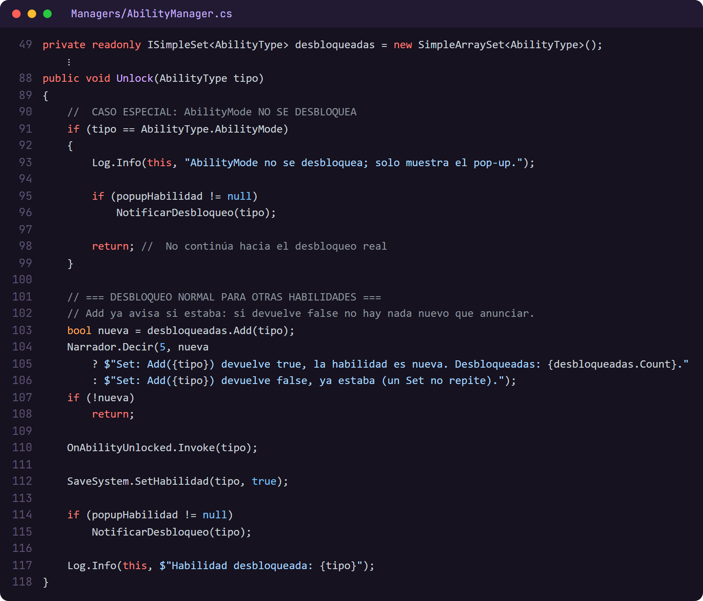
En las dos versiones Add es O(n), porque antes de agregar hay que revisar que no esté. Así que el tiempo no decide. Son cinco habilidades como mucho: un arreglo chico ocupa menos memoria que cinco nodos.
Un diccionario asocia una clave con un valor, como una agenda: buscás por nombre y obtenés el teléfono. Las claves no se repiten. Se busca con TryGetValue, que dice si la clave existe sin tirar error.
Cuando hacés clic con una habilidad elegida, el juego busca en un diccionario qué código ejecutar para esa habilidad. Y el pool de bloques tiene una reserva separada por cada tipo de bloque: el diccionario va de tipo a su lista.
Fila Diccionario: "TryGetValue(ShadowBlocks) encuentra la habilidad a ejecutar" en cada clic, o "la reserva de 'ShadowBlock' está vacía, se instancia un bloque nuevo" (ver la captura del TP02).
Clases: ISimpleDictionary, SimpleArrayDictionary, SimpleLinkedDictionary. Se usa en PlayerAbilityController (tipo de habilidad → habilidad) y en PoolDeBloques (prefab → lista de bloques guardados).
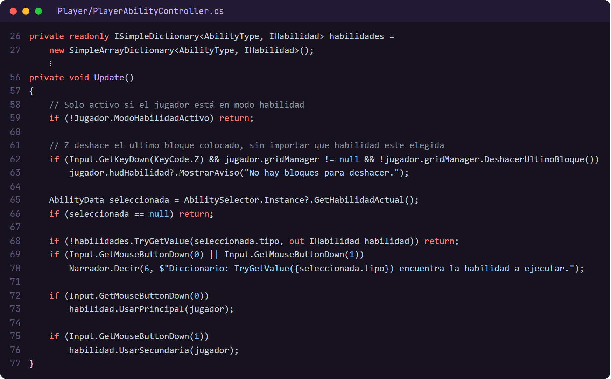
Son cuatro habilidades que se cargan una vez al empezar y se consultan muchas veces. Con tan pocas claves, recorrer un arreglo corto es rápido y no se gasta un nodo por entrada. Lo mismo en el pool, que tiene dos o tres tipos de bloque.
Ordenar es acomodar una colección según un criterio, como ordenar las cartas en la mano. Implementamos los tres algoritmos vistos en clase, Bubble, Selection y Quick, en orden ascendente o descendente (el extra de la consigna).
Al llegar a la salida de un nivel se guarda tu tiempo. El índice muestra el ranking de los niveles terminados, del más rápido al más lento. En el juego completo, el cartel de cada puerta del Hub dice en qué puesto está ese nivel.
Fila Sorting, al terminar un nivel: "CollectionSort ordena los tiempos de 3 niveles. Primero: …". Después el ranking queda visible en el índice.
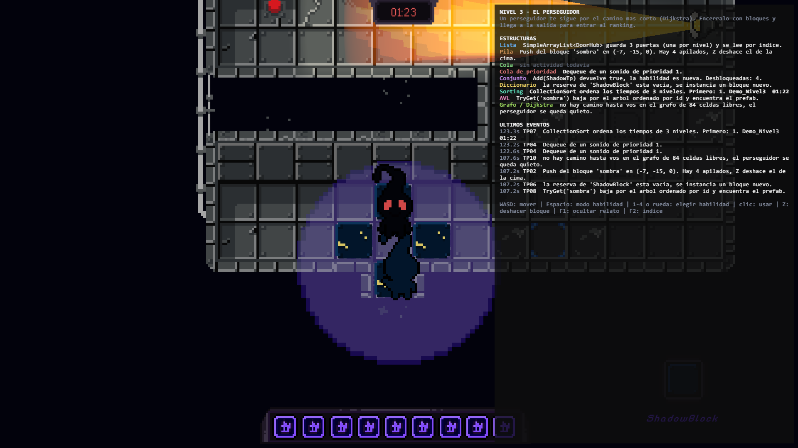
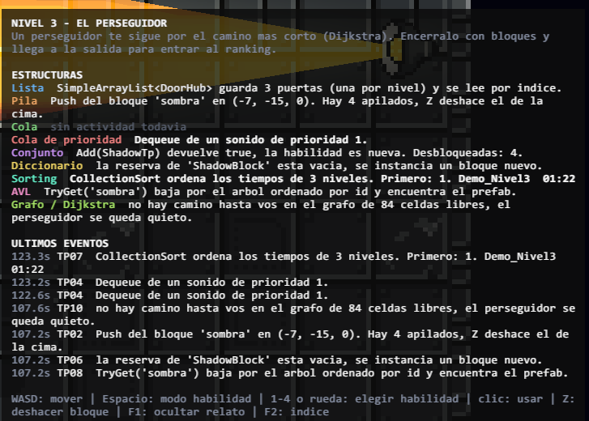
Clase: CollectionSort, con SortArray y SortList, más el método Sort en la interfaz de las listas. El orden es genérico: recibe una Comparison que dice cómo comparar dos elementos. Por defecto usa Quick y orden ascendente.
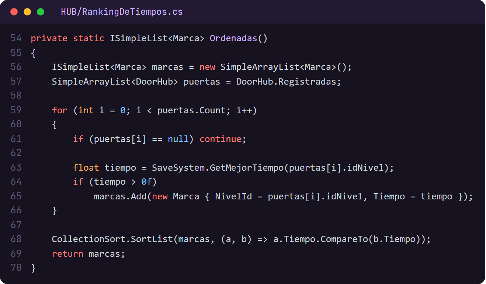
Las demos guardan sus tiempos con ids propios (Demo_Nivel1 a Demo_Nivel3), así que no tocan el ranking del juego real. La captura del índice al principio de la guía muestra el ranking con los tres niveles.
Un árbol binario de búsqueda (BST) guarda datos ordenados así: cada nodo tiene a la izquierda los menores y a la derecha los mayores. Para buscar se baja por un solo camino, descartando la mitad en cada paso, como buscar en una guía telefónica.
El problema: si los datos entran ya ordenados, el árbol crece hacia un solo lado, queda como una lista y buscar pasa a ser O(n). El AVL lo arregla: después de cada alta o baja revisa la altura de los dos lados de cada nodo y, si difieren en más de uno, rota para reequilibrar. Así buscar, agregar y quitar son siempre O(log n).
| Si el árbol pesa hacia… | El AVL hace |
|---|---|
| izquierda-izquierda | una rotación a la derecha |
| derecha-derecha | una rotación a la izquierda (el caso del dibujo) |
| izquierda-derecha | rota el hijo a la izquierda y después el nodo a la derecha |
| derecha-izquierda | rota el hijo a la derecha y después el nodo a la izquierda |
Cada vez que ponés un bloque, el juego busca en un catálogo qué tipo de bloque construir ("sombra" o "espejo"). Ese catálogo es un AVL ordenado por el id del bloque.
Fila AVL: "TryGet('sombra') baja por el árbol ordenado por id y encuentra el prefab" (ver la captura del TP02). Probalo en el nivel 2 alternando sombra y espejo.
Clases: TreeNode<T>, BST<TKey, T> y AVL<TKey, T>, que hereda de BST y sobrescribe Insertar y Quitar para balancear. Hicimos el opcional de la consigna: el árbol guarda un tipo (la entrada del catálogo) y busca por otro (el id de texto), con una función de comparación que se pasa al constructor.
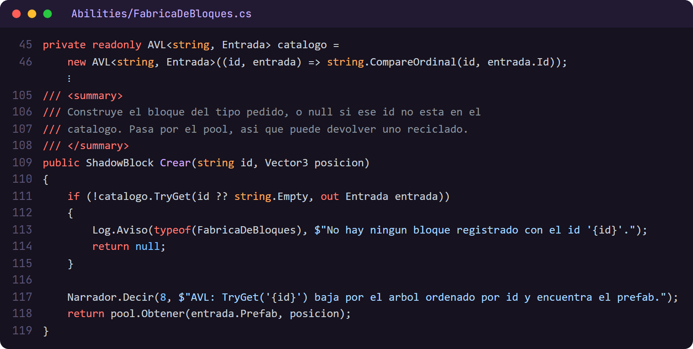
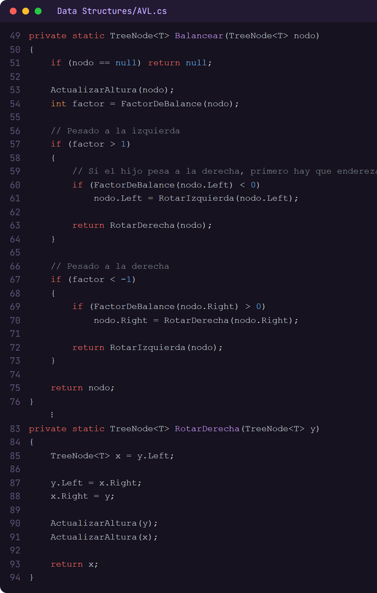
El BST también tiene los recorridos InOrder, PreOrder y PostOrder, Min, Max, Height y un dibujo del árbol para depurar. La prueba del AVL inserta datos en los cuatro casos de desbalance y comprueba que el árbol queda equilibrado.
Si preguntan "¿para dos elementos hace falta un árbol?": a este tamaño no se nota. La consigna pide reemplazar el BST por el AVL en el juego, y el catálogo es el lugar donde crecería si se suman bloques.
Un grafo es una red de puntos (nodos) unidos por conexiones (aristas), como un mapa de subte: estaciones y vías. Cada vía puede tener un costo. Dijkstra es el algoritmo que usa un GPS para encontrar el camino más barato entre dos puntos: siempre sigue explorando desde el lugar más cercano que todavía no visitó, hasta llegar al destino.
Nivel 3. El NPC de ojos rojos te sigue por el camino más corto sobre la grilla del piso. Cada bloque que ponés ocupa una celda y cambia el mapa, así que el perseguidor lo rodea. Si lo encerrás, se queda quieto porque no hay camino. Si te alcanza, volvés al inicio sin morir.
Fila Grafo / Dijkstra: "ruta de 7 celdas hasta vos sobre un grafo de 88 celdas libres", o "no hay camino hasta vos" cuando quedó encerrado. Con Gizmos activado en la vista Game se ve la ruta dibujada en celeste.
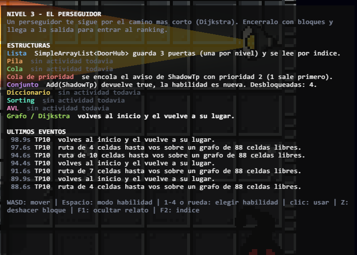
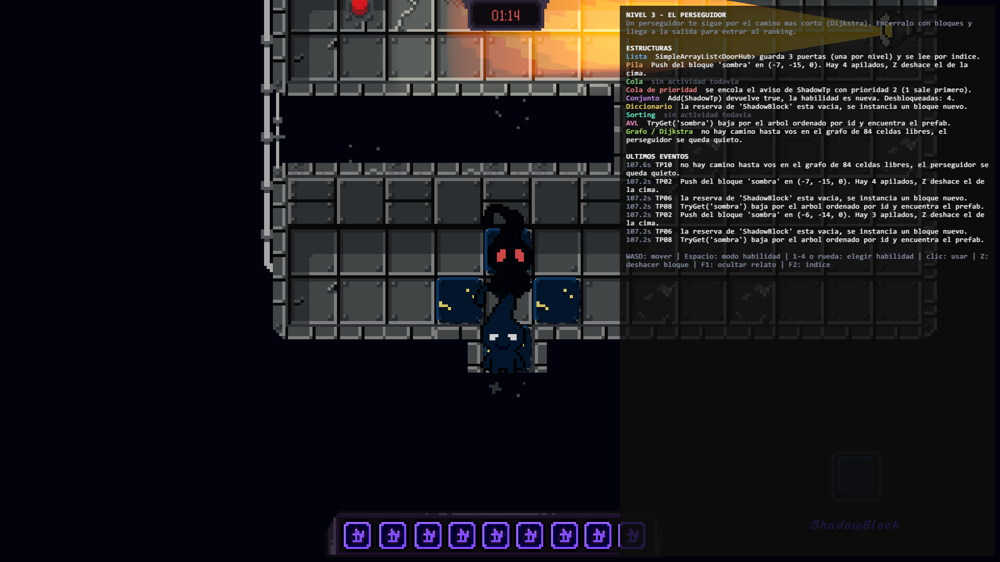
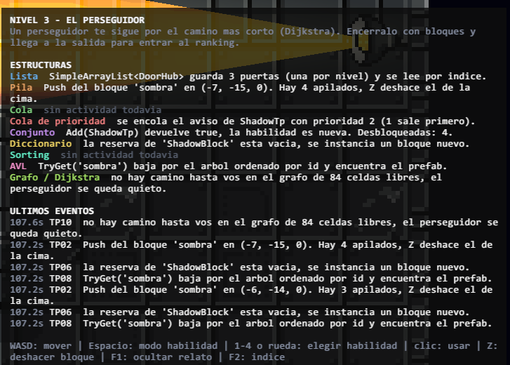
Elegimos la lista de adyacencia genérica: Graph<T> guarda un diccionario propio que va de cada nodo a la lista propia de sus aristas. Tiene altas y bajas de nodos y aristas, consulta de vecinos y aristas en uno o dos sentidos.
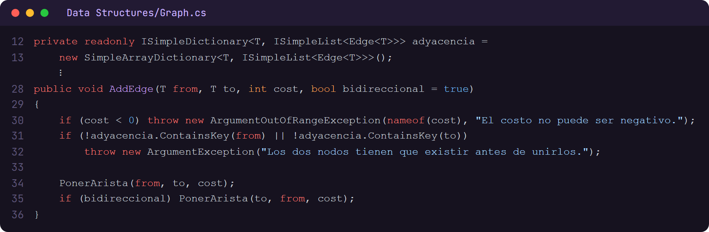
En el juego, GridManager.ConstruirGrafo() arma el grafo con las celdas del piso que no tienen bloque, unidas con sus vecinas a costo 1:
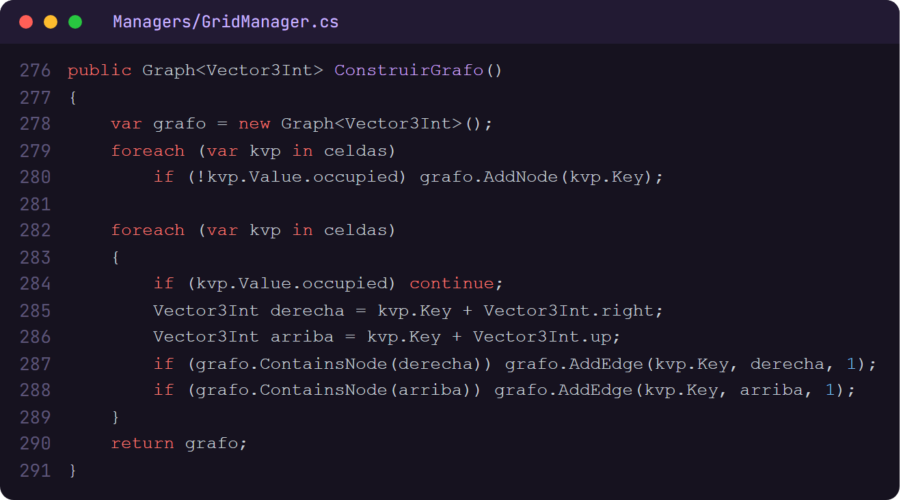
DijkstraSolver<T> cumple la interfaz IPathfindingSolver<T>, así que se podría cambiar por otro algoritmo (por ejemplo A*) sin tocar al perseguidor. Por dentro reutiliza estructuras de los TP anteriores:
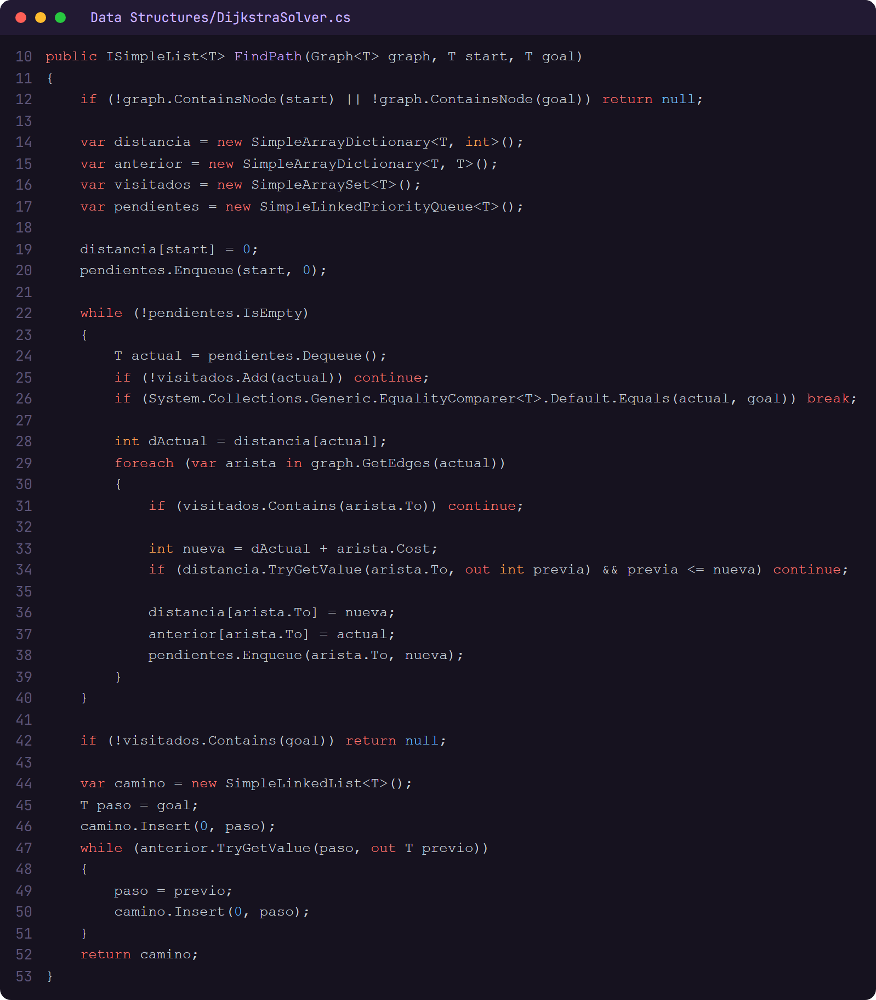
NPCPerseguidor recalcula la ruta cada medio segundo, porque los bloques cambian el mapa, y camina hacia la siguiente celda del camino.
Un recorrido de unos diez minutos que pasa por los diez TP en orden de juego:
PruebaTodo para ver las pruebas automáticas de cada estructura.| Pregunta | Respuesta corta |
|---|---|
| ¿Por qué no usaron las colecciones de C#? | La consigna pide las propias. Están en Data Structures/ y cumplen las mismas interfaces que vimos en clase. |
| ¿Cómo eligieron entre estática y dinámica? | Por la operación que más se repite: si es acceder por índice o trabajar en el final, arreglo; si es sacar el primero, enlazada. Cuando el tiempo empata, decide la memoria. |
| ¿Qué pasa si cambio la implementación? | El juego guarda la interfaz, así que es cambiar el new en una línea. El resto del código no se entera. |
| ¿Por qué el número chico es más prioritario? | Es la convención que elegimos, como los puestos de una carrera. Está documentada en la interfaz y se respeta en todo el proyecto. |
| ¿Dijkstra o A*? | La consigna pide Dijkstra. Como está detrás de IPathfindingSolver, sumar A* sería escribir otra clase sin tocar al perseguidor. |
| TP | Estructura | Dónde está en el juego | Implementación |
|---|---|---|---|
| 01 | List | Pool de bloques, puertas de los niveles | Estática |
| 02 | Stack | Deshacer bloques con Z (GridManager) | Estática |
| 03 | Queue | Rutina de Noxel y del guía (NPCDemostrador) | Dinámica |
| 04 | Priority Queue | Sonidos y avisos (AudioManager, PopupManager) | Las dos |
| 05 | Set | Habilidades desbloqueadas (AbilityManager) | Estática |
| 06 | Dictionary | Habilidades del jugador, reservas del pool | Estática |
| 07 | Sorting | Ranking de tiempos (RankingDeTiempos) | Quick por defecto |
| 08 / 09 | BST / AVL | Catálogo de tipos de bloque (FabricaDeBloques) | AVL sobre BST |
| 10 | Graph + Dijkstra | Perseguidor del nivel 3 (NPCPerseguidor) | Lista de adyacencia |